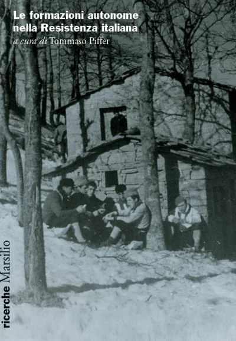

Books, essays and research; the episodes written for audio; the newsletter that comes out now. Grouped by genre, and inside each genre from the most recent.
Grouped by genre, and inside each genre from the most recent.
Edited by Roberto Tagliani and Danilo Aprigliano, with a preface by Enrico Letta. The speeches of Martinazzoli’s last political season in the regional council; the volume was presented in the Sala degli Atti Parlamentari of the Italian Senate on 13 June 2016.
Edited by Danilo Aprigliano and Giuditta Grechi, with a preface by Moni Ovadia. A Piedmontese Jewish industrialist’s account of himself and his family: the years of racial persecution and the escape to Switzerland.
A diagnosis of educational inequality in Milan neighbourhood by neighbourhood, and an agenda in five priorities. It comes out of the crossing between teaching in the city’s schools, the research of the «Hey Milano» process and the work of the study centre.

“Le Fiamme Verdi bresciane: da «il ribelle» alle battaglie del Mortirolo” Marsilio · 2020With Roberto Tagliani, in Le formazioni autonome nella Resistenza italiana, edited by Tommaso Piffer, Venice, Marsilio, 2020, pp. 151–167. From the Catholic clandestine paper to the partisan war in Valtellina. The text.
The thesis I took my doctorate with at the University of Siena, including a critical edition sample of the Mireoir aus princes. Deposited on Academia.
D’Annunzio’s 1919 Fiume enterprise read as literary history before political history. Published in «The Pitch» on 14 September 2020, then deposited on Academia.
Paper given at the Rencontres de l’Archet of the Fondazione Centro Studi Natalino Sapegno, on how the illuminations of fourteenth-century songbooks comment on the text rather than illustrate it.
A study in Romance philology on the early fourteenth-century court poet and on the representation of kingship in his dits.
A personal publication with six sections: politics, history and memory, schools, artificial intelligence, culture and literature, the world. Among the most read pieces, an anatomy of the yearly row over abolishing the final school exam and a defence of schooling as a public good.
Between 2020 and 2021 I wrote for audio at Cast Edutainment in Milan, the house behind the Gli Ascoltabili label: episodes for three different series, plus the digital properties and the listening figures. It is the trade that taught me to fit a story inside a given length.
Gli Ascoltabili · two episodes · true crime
The company’s flagship series: criminal cases reconstructed from documents and told in half an hour. Mine are «Un lavoro tossico», on the worker who spent thirty-five years poisoning his colleagues in a German engineering plant, and «Nel corpo di mia madre», on the Ed Gein case.
Gli Ascoltabili · two episodes · ordinary lives inside history
Here the subject is not a crime but an ordinary life crossed by a large event. I wrote «Oltre la strada niente», on a farmer in San Severo and the trunk road that runs past his fields, and «Por 30 Pesos», on a student in Santiago during the Chilean revolt that began with a thirty-peso rise in the metro fare.
Gli Ascoltabili · one of the writers · fiction
Twelve episodes of serial fiction: Folco Scuderi, a risk manager, investigates alleged medical negligence to establish whether a claim deserves compensation. The episodes are named after myths – Perseus and Medusa, Oedipus, Cassandra – and the series is written by several hands: the hard part is holding the voices together so that it stays one series.
eleven episodes across five formats · Radio Scrambler
Format seriale per il marchio Ducati Scrambler: ritratti di ribelli (Maradona, Philip K. Dick, Andy Warhol), libertà di scelta con Into the WildA serial format for the Ducati Scrambler brand: portraits of rebels (Maradona, Philip K. Dick, Andy Warhol), freedom of choice through
campaign for the national federation of Italian allied health professions
Author and editorial collaborator on the campaign about the identity and dignity of healthcare professionals: stories, narratives and audiovisual materials to get eighteen professions called by their own names, when the public knows them only as «the nurses» or «the technicians».
«The importance of psychosocial care in the journey of a sick child» · Cast Edutainment, ECM provider no. 6939
Project manager and content author of an accredited training course for healthcare staff: sixteen hours of distance learning, twenty-four CME credits, provider Cast Edutainment, scientific supervision by the paediatrician and haematologist Momcilo Jankovic, with Franca Benini and Federico Pellegatta among the teachers. The subject is how you stand beside a sick child and their family, and the difficulty was not the medicine: it was building a course that eighteen different professions could actually follow. It has been in the catalogue since 2021 and the current edition is still online: a course that outlives its own edition is the only serious way to measure whether it was well made.
Where some of these texts come from: the Marsilio chapter on the Fiamme Verdi grew out of the digital archive I built for «il ribelle» and the Brescia Fiamme Verdi (il-ribelle.it, fiammeverdibrescia.it); the paper given at the Rencontres de l’Archet comes from the doctoral thesis; the shorter pieces are in the archive and on «Il punto cieco». The deposited texts are on Academia.